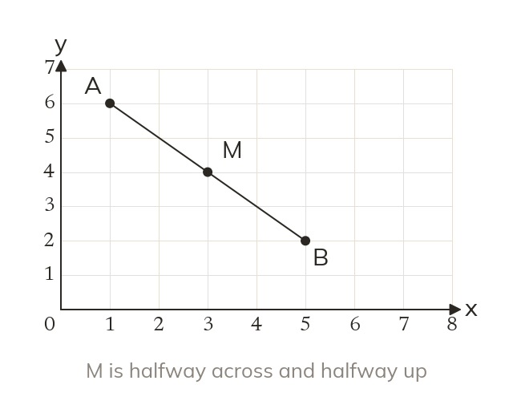
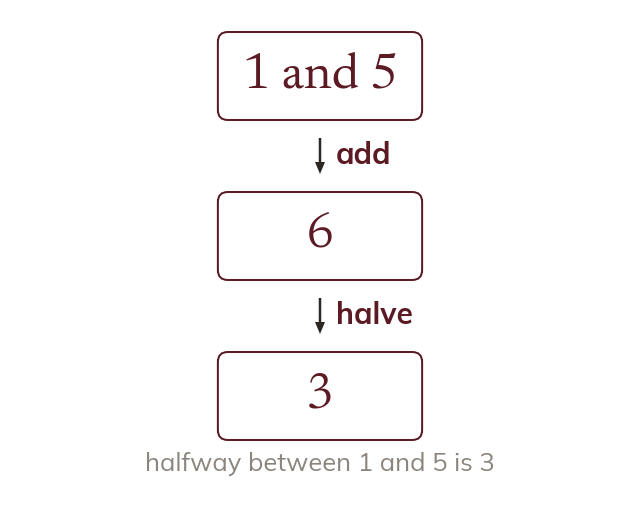
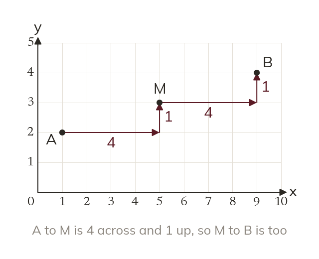
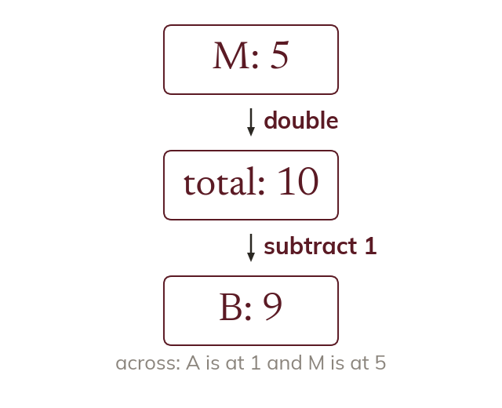

Halfway along
The midpoint of a line segment is the point halfway along it. It is halfway across between the two x-coordinates, and halfway up between the two y-coordinates.
A bridge is built out from both banks to meet halfway, and a map finds the spot halfway between two towns. The midpoint of a line segment is that meeting point, found from the coordinates alone.
Work down the page at your own pace. Write every answer in your book first, then click to check it.
Read each card, then follow the worked examples one step at a time.

The midpoint of a line segment is the point halfway along it. It is halfway across between the two x-coordinates, and halfway up between the two y-coordinates.

The number halfway between two numbers is their mean. Add them, then halve the total.
Pick an answer. If it's wrong, the feedback tells you which mistake it was.
Read each card, then follow the worked examples one step at a time.

From one end to the midpoint is half the journey. The other end is the same step again, on past the midpoint.

Doubling a midpoint coordinate gives the total of the two ends. Take away the end you know to leave the other one.
Pick an answer. If it's wrong, the feedback tells you which mistake it was.
Finished? Next lesson: 10.15.2 Lengths of Line Segments.
Log in, then search for a code to practise that skill.